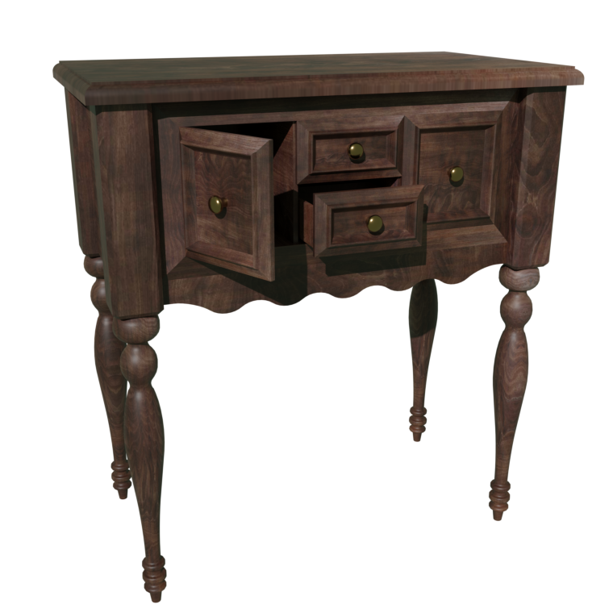

Welcome to my portfolio! Here, you'll find examples of my 3D models, Renders, and my programming development process.
Welcome to my digital art portfolio, where creativity meets technology. I’m passionate about exploring the endless possibilities of digital art, from the details of 3D modeling and rendering in Blender to the precision of 2D vector art in Inkscape and Illustrator. Whether it's crafting stunning visuals or designing intuitive user experiences, I thrive on bringing ideas to life through code and design.
My love for programming spans multiple languages, allowing me to create dynamic, interactive projects that are as functional as they are visually appealing. I also enjoy working with databases, ensuring that the data behind every creation is as well-crafted as the front end. This blend of artistry and technical skill drives me to continually push the boundaries of what’s possible in the digital world.
Take a look around, and explore the projects that reflect my passion for combining art and technology into something truly unique.
Thank you for taking the time to visit my website. I hope you enjoy exploring my portfolio and learning more about my
skills and expertise.